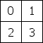
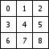
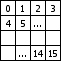

Flare
Flare objects are the source assets that are used by Lens Flare Components. The Flare itself is a combination of a texture file and specific information that determines how the Flare behaves. Then when you want to use the Flare in a Scene, you reference the specific Flare from inside a LensFlare Component attached to a GameObject.
There are some sample Flares in the Standard Assets package. If you want to add one of these to your scene, attach a Lens Flare Component to a GameObject, and drag the Flare you want to use into the Flare property of the Lens Flare, just like assigning a Material to a Mesh Renderer.
The Flare Inspector
Flares work by containing several Flare Elements on a single Texture. Within the Flare, you pick & choose which Elements you want to include from any of the Textures.
Properties
| Elements | The number of Flare images included in the Flare. |
| Image Index | Which Flare image to use from the Flare Texture for this Element. See the Flare Textures section below for more information. |
| Position | The Element's offset along a line running from the containing GameObject's position through the screen center. 0 = GameObject position, 1 = screen center. |
| Size | The size of the element. |
| Color | Color tint of the element. |
| Use Light Color | If the Flare is attached to a Light, enabling this will tint the Flare with the Light's color. |
| Rotate | If enabled, bottom of the Element will always face the center of the screen, making the Element spin as the Lens Flare moves around on the screen. |
| Zoom | If enabled, the Element will scale up when it becomes visible and scale down again when it isn't. |
| Fade | If enabled, the Element will fade in to full strength when it becomes visible and fade out when it isn't. |
| Flare Texture | A texture containing images used by this Flare's Elements. It must be arranged according to one of the TextureLayout options. |
| Texture Layout | How the individual Flare Element images are laid out inside the Flare Texture. |
| Use Fog | If enabled, the Flare will fade away with distance fog. This is used commonly for small Flares. |
Details
A Flare consists of multiple Elements, arranged along a line. The line is calculated by comparing the position of the GameObject containing the Lens Flare to the center of the screen. The line extends beyond the containing GameObject and the screen center. All Flare Elements are strung out on this line.
Flare Textures
For performance reasons, all Elements of one Flare must share the same Texture. This Texture contains a collection of the different images that are available as Elements in a single Flare. The Texture Layout defines how the Elements are laid out in the Flare Texture.
Texture Layouts
These are the options you have for different Flare Texture Layouts. The numbers in the images correspond to the Image Index property for each Element.
| 1 Large 4 Small |  Designed for large sun-style Flares where you need one of the Elements to have a higher fidelity than the others. This is designed to be used with Textures that are twice as high as they are wide. |
| 1 Large 2 Medium 8 Small |  Designed for complex flares that require 1 high-definition, 2 medium & 8 small images. This is used in the standard assets "50mm Zoom Flare" where the two medium Elements are the rainbow-colored circles. This is designed to be used with textures that are twice as high as they are wide. |
| 1 Texture |  A single image. |
| 2x2 grid |  A simple 2x2 grid. |
| 3x3 grid |  A simple 3x3 grid. |
| 4x4 grid |  A simple 4x4 grid. |
Hints
- If you use many different Flares, using a single Flare Texture that contains all the Elements will give you best rendering performance.
- Lens Flares are blocked by Colliders. A Collider in-between the Flare GameObject and the Camera will hide the Flare, even if the Collider does not have a Mesh Renderer.
Page last updated: 2007-09-10